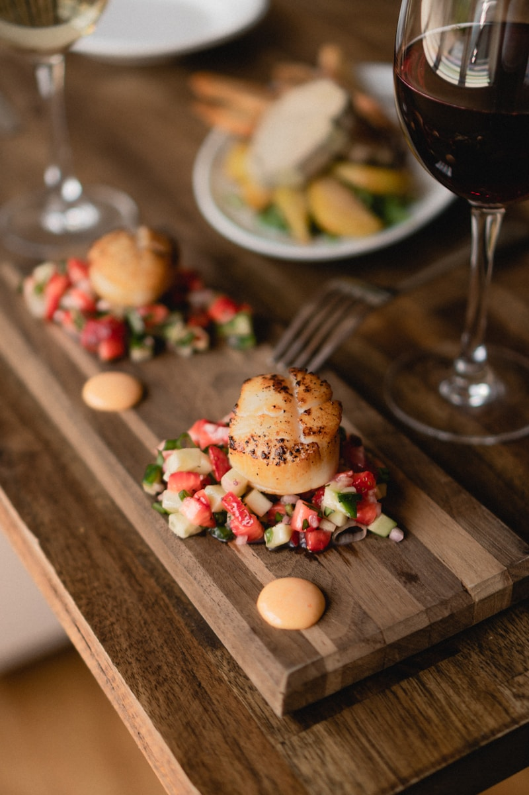

Photo Gallery
A thousand years in a glance — there is always a view that moves you

Boshan Ceramic & Glass Park
Zhoucun Ancient Commercial City
Red Leaf Shiya Scenic Area
Qisheng Lake Park at Night
The grand ancient capital of the Qi State, with 3,000 years of unbroken cultural legacy
A city that went viral for its BBQ and is remembered across China for its genuine hospitality
This city has so many reasons to merit a visit
Flatbread wraps everything, and the dipping sauce is the soul of the dish. Food lovers from across China come to experience the most authentic Zibo street food atmosphere.
Duke Huan of Qi — foremost hegemon of the Spring and Autumn period — established his capital here. The Great Wall of Qi, the Horse Sacrifice Pit, and the Jixia Academy are all within reach.
One of China's five major ceramic-producing areas, with world-renowned Boshan glass art. Experience intangible heritage craftsmanship first-hand and take art home with you.
Capturing every facet of this city through the lens

The soul of Zibo BBQ lies in the “three-piece set” — flatbread, tabletop grill, and dipping sauce. Diners gather around individual charcoal stoves, strip sizzling skewers of meat, wrap them in thin flatbread, and dip them in a special scallion sauce for a burst of layered flavour. In 2023, Zibo won over food lovers across China with its sincerity and became a landmark cultural tourism success story.
Learn More →Zibo is the site of Linzi, the capital of the Qi State during the Spring and Autumn and Warring States periods. Here stands the world's earliest state-run academy — the Jixia Academy, China's oldest surviving stretch of the Great Wall, and the grand Museum of Qi State History. Step into this land and feel three millennia of civilisation alive in the present.
Explore Culture →Data that reveals the power of this city
Years of History
Permanent Residents
Heritage Protection Items
Annual Visitors
A thousand years in a glance — there is always a view that moves you